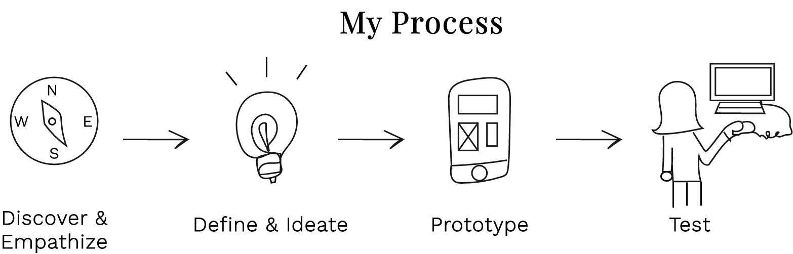
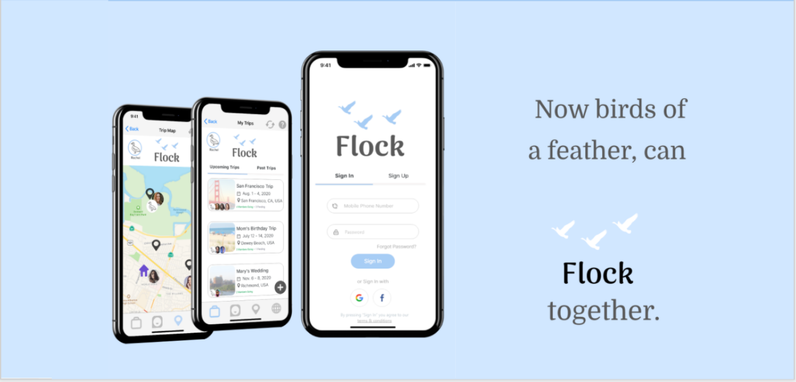
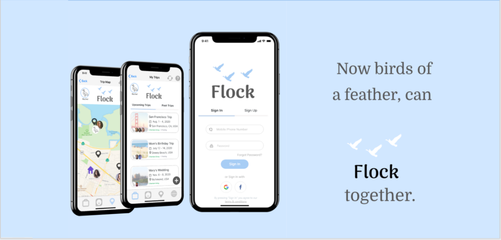

The fantasy
No one likes to think a group trip will ever go poorly. Whether it’s a girls’ get-away, a college buddy reunite, or family road trip, everyone starts out with the best intentions and excitement about the memories to come. Late night conversations, thrilling adventures and group bonding are what’s on the mind.
But when you get down to it, planning a group trip isn’t easy.
The reality (a.k.a the problem)
Multiple schedules, different personalities and preferences for activities can lead to stress, frustration, and occasionally, a trip getting called off— which strains finances and friendships. We knew their had to be a better way.
The road to a solution
1. Discovery & empathizing
User Research
I started out by investigating what people’s travel planning process like. What do they love? Hate? Wish was different?
Myself and my collaborator, Edward Chase, interviewed and surveyed 22 people who traveled at least twice a year across the age spectrum from 18 to 50+. A few patterns emerged:

It turns out that the people on your trip can be the best thing about it or the worst. Trip planners often felt that gaining a consensus on big trip decisions, like trip dates or daily itineraries, could be particularly difficult.

Meet Rachel!
To encapsulate everything we were hearing from users and to give me someone to picture when I was designing, we created a proto-persona named Rachel. She’s 26, loves adventuring and hopes to meet up with her friends on a trip soon.

2. Definition & ideation
I went on to distill users’ pain points into a user insight statement through the point of view of Rachel.
User insight statement & how might we question
Rachel likes to travel with friends, but often finds it difficult to plan and complete a trip with more than three people.
It frustrates her that most of her friends do not care about planning the trip, because she is the one to blame if anything goes wrong and it takes me a lot of time. She wishes there were a way to get more people involved in planning the trip and for them to better communicate when they get there.
Using that question as a guidepost, I started brainstorming solutions based on what our users said.
Feature prioritization matrix
My first step was creating a feature prioritization matrix that showed what areas people cared the most about.

Value proposition matrix
My first step was creating a feature prioritization matrix that showed what areas people cared the most about.

User scenario, storyboard and journey map
I imagined how Rachel (or any user) could actually use these features in real life.

Journey map

3. Prototyping
I looked into what competitors were doing and what areas they hadn’t quite tapped. From there, I wrote out a flow of what path users would take within the app. Now, it was time to prototype!
Sketches

Low fidelity prototype

4. Testing
Due to COVID-19 limitations, I tested with five users over Zoom. While users enjoyed the overall idea of the app and its possible features, they had trouble visualizing what it would entail & wished for more consistency and details.

Key usability findings
Users Like
- Nice colors
- Good branding
- Fun, individualized profiles
- "I would use this app."
Users wish for
- Nice colors
- Fun, individualized profiles
- "I would use this app."
Users are confused by
- Nice colors
- Good branding
- Fun, individualized profiles
- "I would use this app."
Taking users’ feedback into account, I expanded the detail to the itinerary, made it collapsable and added an area for additional activity tagging. I also expanded the chat feature and made it easier to locate additional chats in the high-fidelity prototype.
 

Reflections & future thoughts
I’d love to build out the app’s functionality including an exploring feature where travelers could explore what their friends’ friends are doing, similar to Venmo’s feed.
I'd also like to further expand the shared photo drive and conduct further testing.
Finally, it would be create to take this app into development!